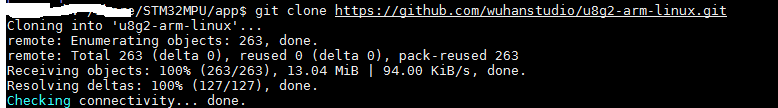
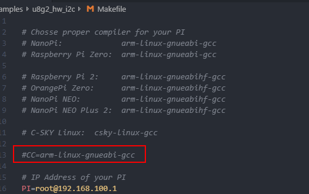
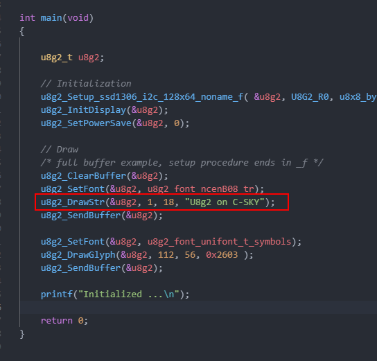
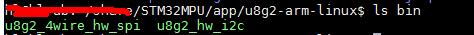
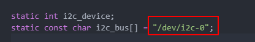
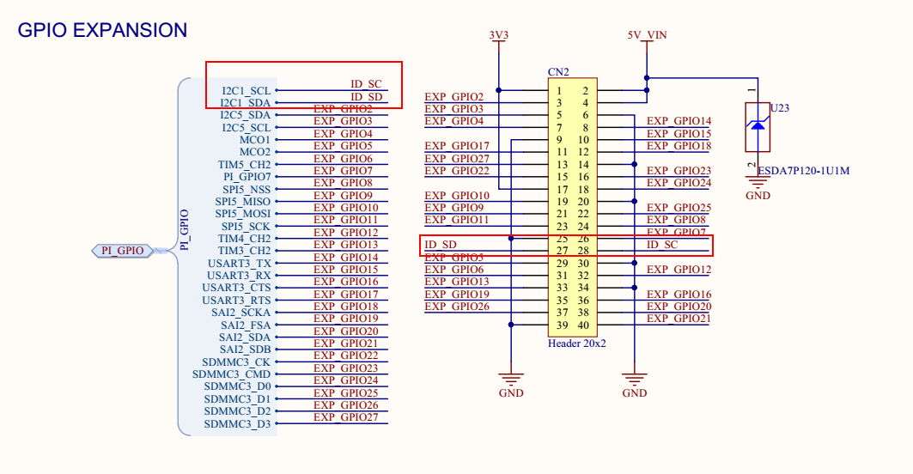
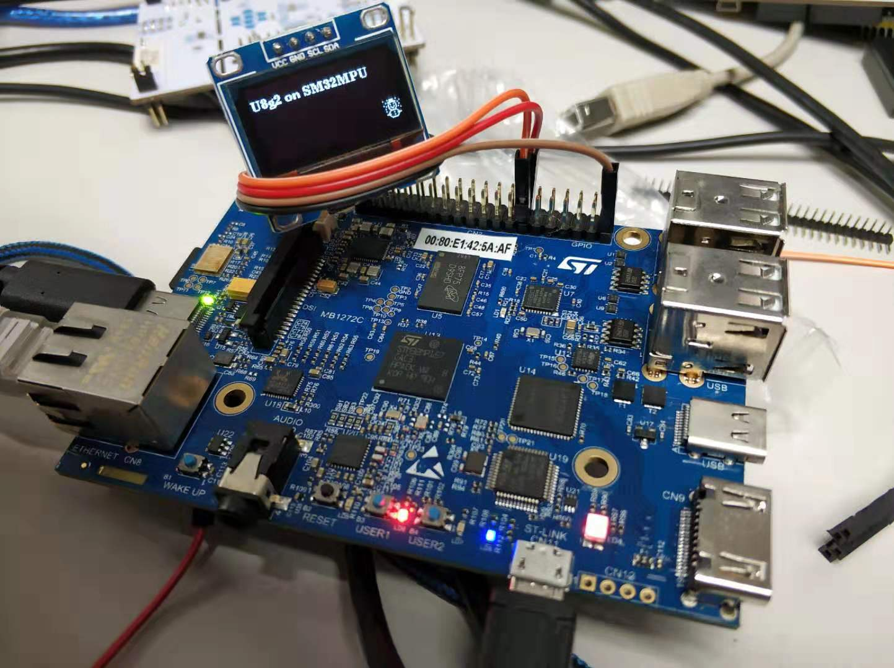
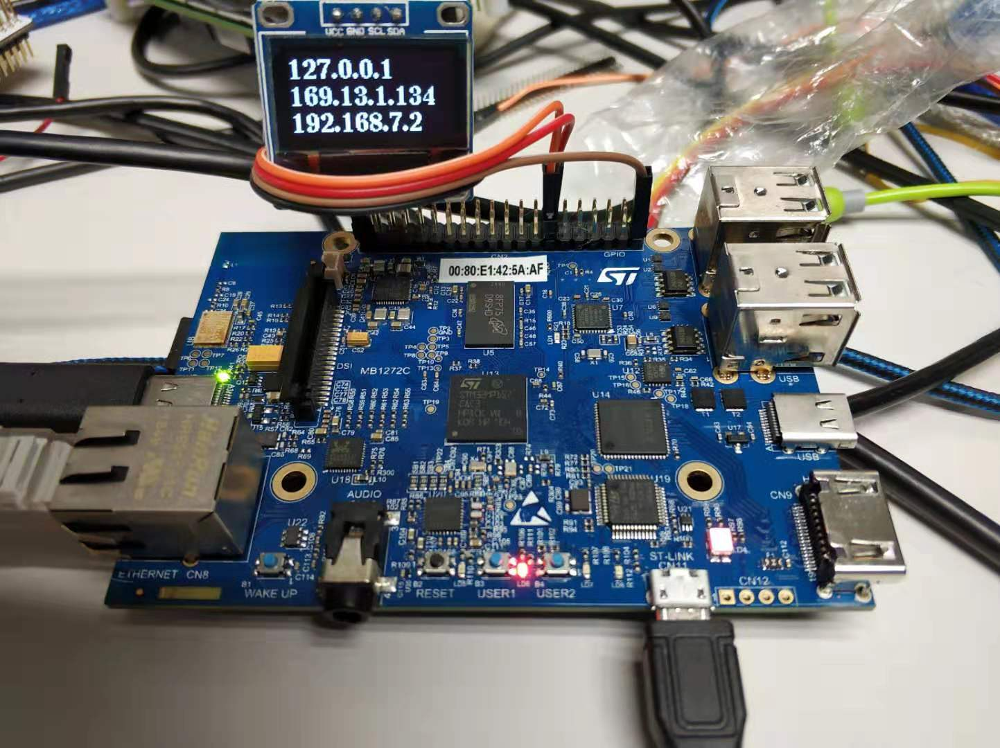

环境
硬件环境：STM32MP157C-DK2
软件：
-
MPU上使用ST官方提供的STM32MP15x OpenSTLinux Starter Package
-
编译系统：Ubuntu 1604 64bit
- 编译器：ST提供的SDK
u8g2
u8g2是面向嵌入式设备的单色图形库，什么意思呢，如果你做些嵌入式设备，恰好是用单色显示设备（可以是单色LCD，OLED，LED点阵屏等），用这个可就很方便了，直接使用u8g2API来显示字符或者图片等，不用知道这些显示设备的底层操作。
u8g2 github地址是https://github.com/olikraus/u8g2，文档， https://github.com/olikraus/u8g2/wiki/gallery 里面的例子，不过这些都是MCU的，如果要在Linux上使用呢？已经有人移植了，在github上可以找到：https://github.com/wuhanstudio/u8g2-arm-linux。
在STM32MP157C-DK2上使用u8g2
下载u8g2
首先下载下来：

在目录u8g2-arm-linux\examples下有两个例程，一个是SPI驱动SSD1306 OLED，一个是I2C前驱动SSD1306 OLED，正好我手上有I2C接口的SSD1306 OLED模块。
修改源码
- 修改makefile
分别把u8g2-arm-linux/examples\u8g2_hw_i2c和u8g2-arm-linux\examples\u8g2_4wire_hw_spi目录下的makefile中的CC赋值的语句注释掉：

- 修改例程
然后修改u8g2-arm-linux/examples\u8g2_hw_i2c\main.c文件，原来的程序如下图：

把显示的文字修改为：U8g2 on STM32MPU。
编译
首先使能SDK，然后输入make就可以编译。编译完之后，尅在bin目录下知道编译出来的文件，

把bin目录中的u8g2_hw_i2c拷贝到STM32MPU板子上。
连接硬件并测试程序
该例子使用的I2C是i2c-0:

STM32MP157C-DK2引出的IO如下：

把显示器连上板子，执行程序，结果如下：

显示板子的IP地址
尝试使用下u8g2,试着在OLED上显示板子的IP地址，

参考:
https://blog.csdn.net/dpjcn1990/article/details/92831760#21_U8g2_26